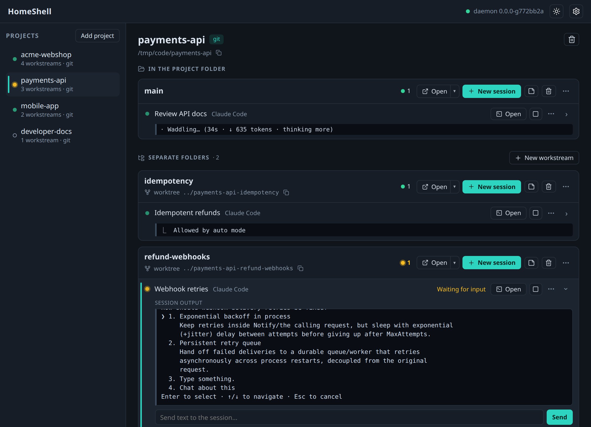

The problem
The freedom that makes agents useful makes them dangerous
An agent is most productive when it can act without asking. But the same freedom that makes it useful is what makes it dangerous.
Agents need broad access to be useful
To get things done end-to-end, an agent runs commands, installs packages, and edits files on its own. Gate every step behind a confirmation prompt and you lose most of the benefit.
Broad access on your host is dangerous
That same agent can delete the wrong files, leak a secret, be hijacked by a prompt injection, or collide with another agent sharing your machine.
The approach
Isolation that stays out of the agent's way
Enclave gives each session its own container, an isolated view of the filesystem, and its own network gateway. The agent keeps full autonomy inside; the damage it can do stays boxed in.
Isolated by the OS
Each session runs in its own container with a separate filesystem and network stack. Only the paths you mount, usually the project worktree, are visible to the agent.
Separate worktrees
Give each parallel agent its own git worktree, using plain git with no extra setup, so their changes never collide. You review and merge on your own terms.
Network you control
A sidecar gateway filters DNS and proxies outbound traffic. Agents reach only the domains on your allowlist; everything else is blocked and logged.
Sessions that persist
Start, pause, resume, and inspect a session whenever you want. Auth, history, and config persist across restarts, including custom skills and MCP servers.
Under the hood
How it works

Each session sees only what you mount (1), runs in its own ephemeral container (2), reaches only allowlisted hosts through the gateway (3), and keeps its state in a store on the host (4).
Quickstart
One command to a sandboxed agent
Point Enclave at any project. It builds the environment and starts your agent in a container on your current checkout.
enclave
# Pick a specific agent
enclave --tool codex
# Resume a previous session
enclave continue
# List active sessions
enclave ps
On the roadmap
Meet HomeShell
Today Enclave is a CLI. HomeShell is a graphical companion on the way: group your work into projects, split each into workstreams, and run agent sessions across them. Start, watch, and switch between sandboxed sessions with a live overview of every agent's status.

Capabilities
Everything in the box
Command line
enclavestarts the default agentenclave --tool codexpicks an agentenclave continueresumes a sessionenclave pslists active sessions
Configuration
- Custom skills and agent templates
- Mount extra directories such as docs or related projects
- Devcontainer support for existing setups
- Per-tool and per-project overrides
Networking
- Domain allowlists
- Per-tool and per-project policies
- Bridge host services into containers
- Connection and request audit logging
Governance
Compliance and audit readiness
A foundation you can audit
Container isolation, network allowlists, and gateway logs already limit what a misaligned or injected agent can do, and they leave an evidence trail you can inspect: in restricted Docker sessions, the connections the gateway proxies and the lookups it blocks are logged, and access outside the allowlist is blocked. That same foundation can grow toward requirements like the EU Cyber Resilience Act (SBOM evidence and vulnerability reporting) and the EU AI Act (Article 12 record-keeping and Article 15 robustness against unauthorized use), with goals such as:
- Log every outbound network request
- Track downloaded dependencies and packages
- Monitor git pull and push operations
- Keep a complete audit trail of agent activity
- Provide evidence for SBOM and supply-chain reviews
- Govern the skills, MCP servers, and plugins available per session
Give your agents room to work, but safely.
Install Eclipse Enclave and start your first sandboxed session.